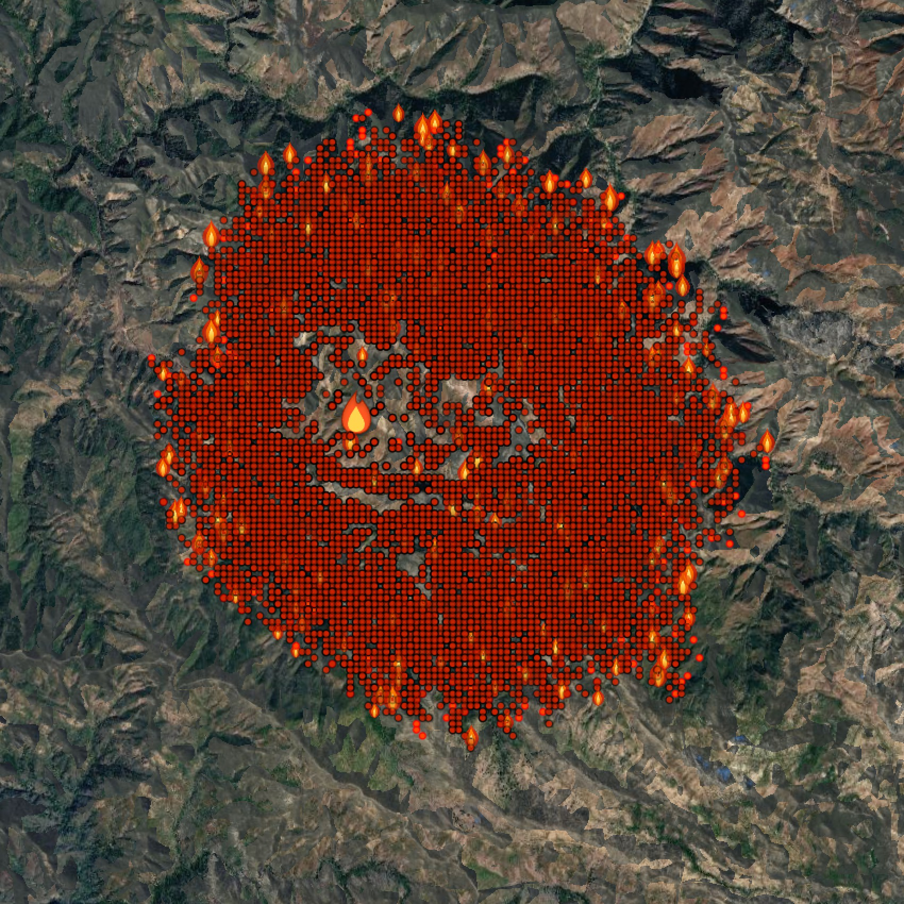
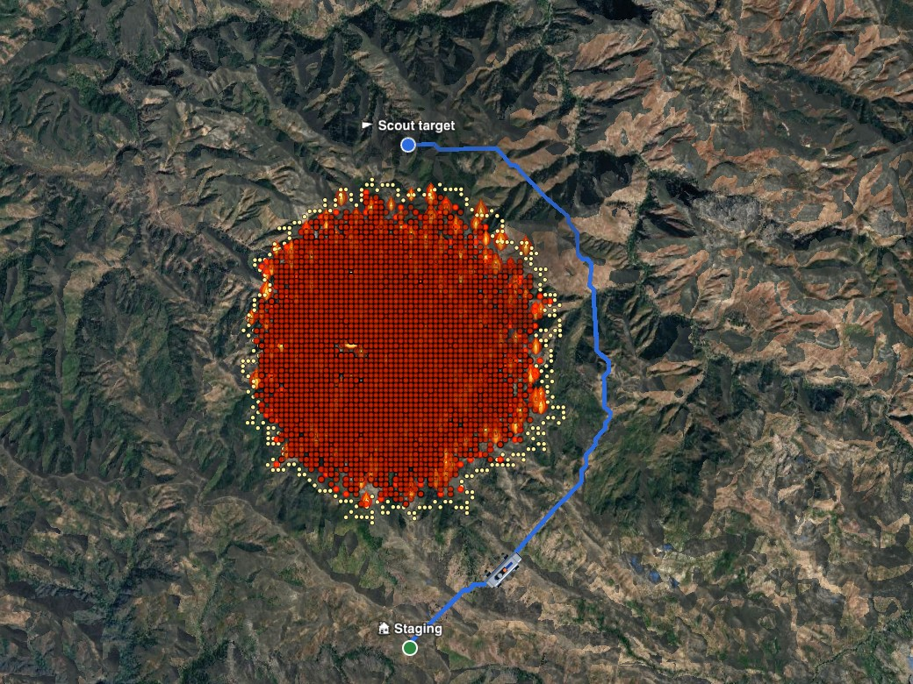
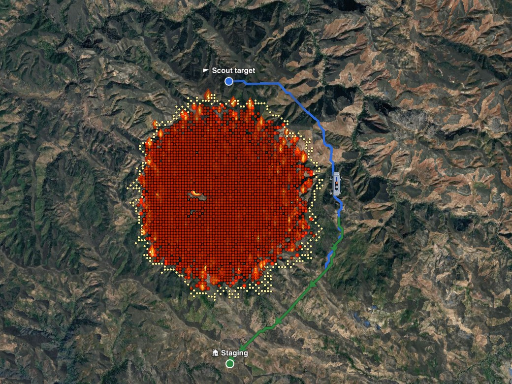
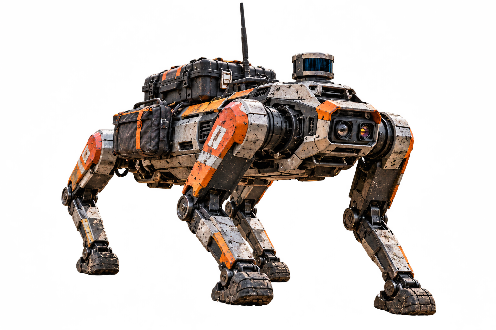
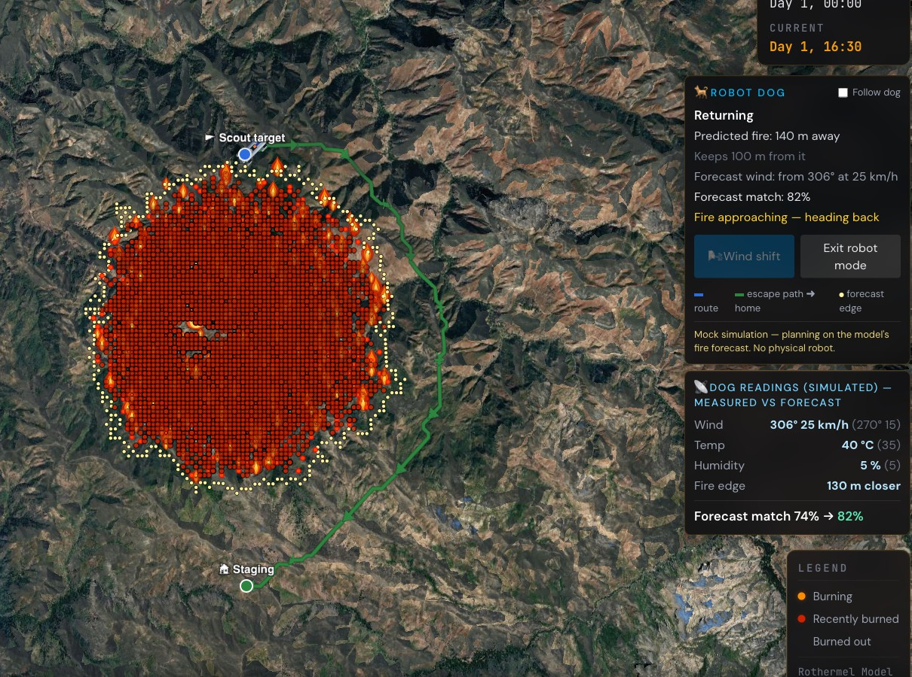

Forecast when each 50 m cell will burn, in 15-minute steps.

Pass every spot 30+ min before the fire. Brush (0.5×) and forest (0.7×) are slower; uphill is slowest. No water or slopes over 35°.

Aim for a way home that stays clear for 60 min, re-planned as the dog moves.

Walk to the fire edge and measure wind, temperature, humidity and where the edge really is.

The readings correct the forecast, and the loop starts again.
Simulator views on real terrain. Robot image: design concept; sensors are simulated.
Two fires run at once on the same terrain:
What the dog plans on.
Hotter, drier, with a wind shift. The dog only learns about it through its readings.
Mock simulation; no physical robot yet.
Code: github.com/sxz2012/wildfire-simulation
NASA FIRMS (VIIRS active-fire detections); Open-Meteo weather archive; ESA WorldCover 10 m land cover; Cesium World Terrain; Google Photorealistic 3D Tiles
Rothermel, R. C. (1972). A mathematical model for predicting fire spread in wildland fuels. USDA Forest Service INT-115.
Chen, T. & Guestrin, C. (2016). XGBoost: A scalable tree boosting system. KDD '16.